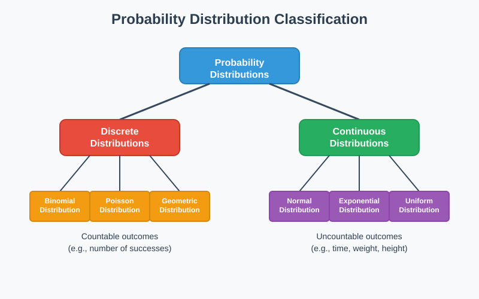
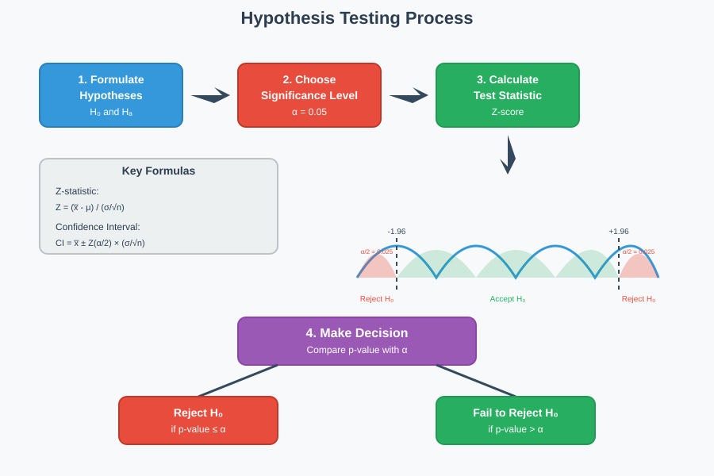
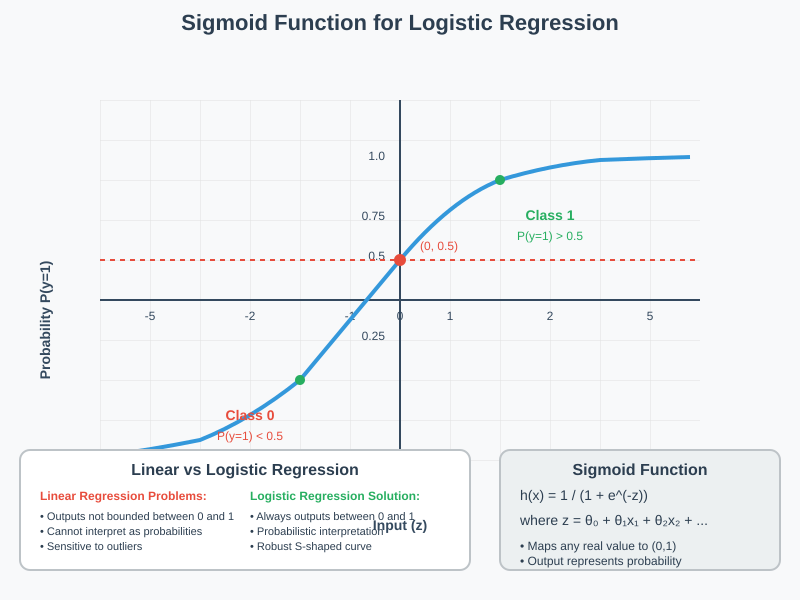
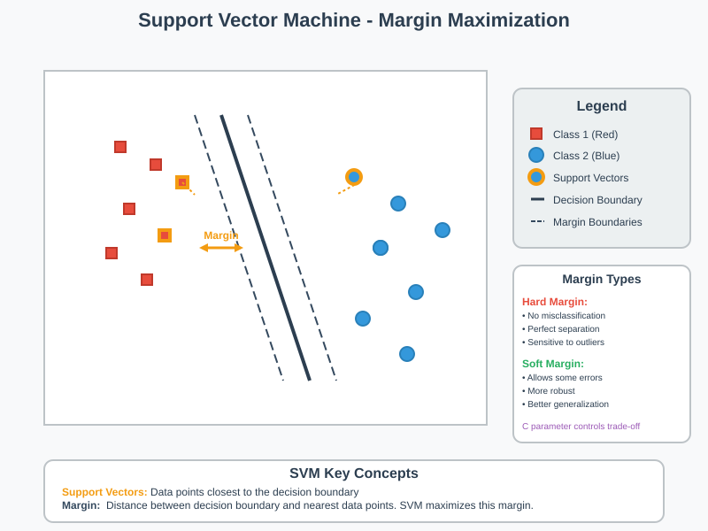
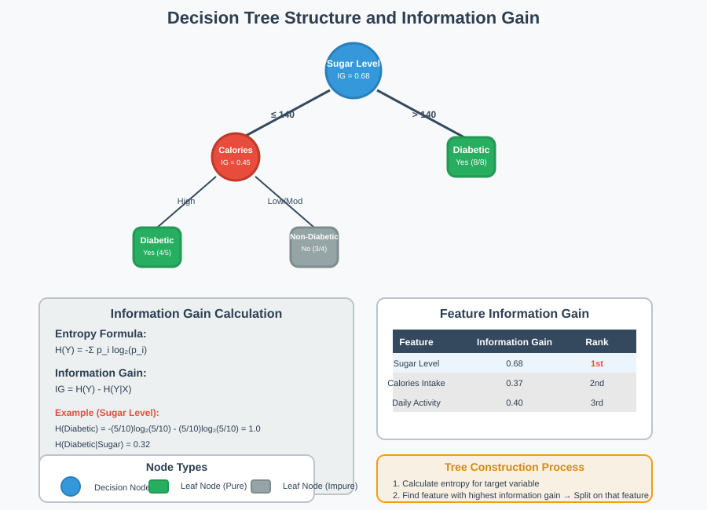

Probability Distributions and Machine Learning Fundamentals
📋 Quick Navigation
- Probability Distributions
- Statistical Inference
- Hypothesis Testing
- Logistic Regression
- Support Vector Machines
- Decision Trees
- Ensemble Methods
- K-Nearest Neighbors
- Model Comparison
- References & Further Reading
🎯 Probability Distributions
Probability refers to the chance or likelihood of a particular event taking place. It is a pure number ranging between 0 and 1.
Probability Distribution is the total listing of the various values a random variable can take along with the corresponding probability of each value.

Probability distributions can be broadly classified into two main categories:
- Discrete Probability Distributions: Deal with countable outcomes
- Continuous Probability Distributions: Deal with uncountable outcomes over intervals
Conditional Probability
Conditional Probability is the probability of an event occurring, which depends on the occurrence of another event. The two events are dependent on each other.
Formula:
P(B|A) = P(A∩B) / P(A)
Where:
- P(B|A) is the conditional probability of event B occurring, given that event A has already occurred
- P(A∩B) is the probability of both events A and B occurring simultaneously
- P(A) is the probability of event A occurring
Example: From a pack of 52 cards, if you randomly select a card and it is a black card, the probability that the card is a spade is 13/26 = 1/2.
📊 Statistical Inference
Statistical inference comprises gathering knowledge about a population through a random sample. Since a population is completely known through its parameters, the problem reduces to assessing population parameters through sample statistics.
Key Definitions
Population: The largest possible collection of items with a set of common characteristics. Size denoted by N (may be finite or infinite).
Sample: A subset of the population. Size denoted by n (always finite).
Random Sample: A subset where each unit of the population has an equal chance of selection.
Population Parameter: Constants that determine a population (e.g., μ, σ², π). Typically denoted by Greek letters.
Sample Statistic: Quantities derived from the sample (e.g., x̅, x̃, s). Denoted by Roman letters.
Illustrative Example
Population of size N = 5: [8, 3, 9, 0, 4], Population mean = 4.8
- Sample 1 (n = 3): [8, 0, 4], Sample average = 4.0
- Sample 2 (n = 3): [3, 4, 9], Sample average = 5.33
🔍 Hypothesis Testing
Hypothesis testing is a statistical method to determine whether there is enough evidence to reject a claim about a population parameter.

Core Components
Null Hypothesis (H₀): The assumption that there is no significant difference or effect.
Alternative Hypothesis (Hₐ): The claim that contradicts the null hypothesis.
Significance Level (α): The probability threshold (commonly 0.05) for rejecting H₀.
Test Statistic: A standardized value used to decide whether to reject H₀.
Z-Statistic Formula
Z = (sample mean - population mean) / (population standard deviation / √n)
Key Terms
- Type I Error (α): Rejecting H₀ when it should not be rejected
- Type II Error (β): Failing to reject H₀ when it should be rejected
- P-value: The actual risk level calculated from the data
- Confidence Level: How confident we are in our decision (typically 95%)
- Confidence Interval: Range of values expected to contain the true parameter
Confidence Interval Formula:
CI = X̅ ± Z × (σ/√n)
📈 Logistic Regression
Logistic Regression is a statistical model used for binary classification problems. It predicts the probability that an observation belongs to one of two possible classes.

Why Not Linear Regression for Classification?
Linear regression has several limitations for classification: - Outputs are not bounded between 0 and 1 - Cannot be interpreted as probabilities - Sensitive to outliers - Decision boundary changes with new data points
The Logistic Regression Model
The model uses the sigmoid function to map any real value to a value between 0 and 1:
Sigmoid Function:
h_θ(x) = 1 / (1 + e^(-z))
Where z = θᵀX = θ₀ + θ₁x₁ + θ₂x₂ + ...
Prediction Rules
- ŷ = 1 if h(X) > 0.5
- ŷ = 0 if h(X) < 0.5
Advantages
- Simplicity: Easy to implement with great training efficiency
- Interpretability: Provides probabilistic outputs
- Linear Separability: Works well when data is linearly separable
Assumptions
- Binary dependent variable: Target must be categorical and binary
- Independence: Observations must be independent
- Low multicollinearity: Independent variables shouldn't be highly correlated
⚡ Support Vector Machines
Support Vector Machine (SVM) is a supervised learning algorithm for classification and regression. The main objective is to find the optimal hyperplane that separates classes with maximum margin.

Key Concepts
Support Vectors: Data points closest to the decision boundary.
Margin: Distance between the hyperplane and the nearest support vectors.
Hyperplane: Decision boundary that separates classes.
Types of Margins
Hard Margin: - No misclassification allowed - All data points correctly classified - Sensitive to outliers - Works only for perfectly separable data
Soft Margin: - Allows some misclassification - Balances margin maximization with error minimization - Robust to outliers - Better generalization
Non-linear SVM and Kernel Trick
For non-linearly separable data, SVM uses the kernel trick to transform data into higher dimensions where it becomes linearly separable.
Common Kernel Functions
1. Polynomial Kernel:
K(xi, xj) = (γ⟨xi, xj⟩ + r)^d
2. Radial Basis Function (RBF) Kernel:
K(xi, xj) = exp(-γ||xi - xj||²)
Gamma Parameter in RBF
- Small γ: Wider influence, smoother boundary (potential underfitting)
- Large γ: Narrow influence, complex boundary (potential overfitting)
Advantages and Disadvantages
Advantages: - Flexible with different data types - Kernel functions handle complexity well - Less prone to overfitting
Disadvantages: - High training time for large datasets - Difficult interpretability (black-box approach)
🌳 Decision Trees
Decision trees are tree-based models that make decisions through a hierarchical structure, splitting datasets into smaller subsets based on feature values.

Key Concepts
Entropy: Measure of randomness or impurity in a dataset.
H(Y) = -Σ pi log₂(pi)
Information Gain: Measure of information gained by adding a feature.
Information Gain = H(Y) - H(Y|X)
Important Terminology
- Root Node: Starting point of the decision tree
- Branch/Sub-Tree: Part of the entire decision tree
- Splitting: Dividing a node based on conditions
- Decision Node: Node that splits into further sub-nodes
- Leaf/Terminal Node: End node that cannot be split further
- Depth: Number of levels from root to furthest leaf
Tree Construction Process
- Calculate entropy for the target variable
- Calculate information gain for each feature
- Select feature with highest information gain as root
- Split data based on selected feature
- Repeat recursively for each branch
- Stop when nodes become pure or stopping criteria met
Tree Pruning
Pruning reduces overfitting by removing parts of the tree that provide little predictive power.
Benefits: - Reduces overfitting - Improves generalization - Simplifies model structure - May slightly increase training error but decreases testing error
🎯 Ensemble Methods
Ensemble methods combine multiple models to create a stronger predictor than individual models alone.
Bagging (Bootstrap Aggregation)
Process: 1. Create multiple bootstrap samples from original dataset 2. Train base model on each sample 3. Aggregate predictions (voting for classification, averaging for regression)
Random Forest
Random Forest extends bagging by using decision trees as base models and introducing additional randomness through feature selection.
Key Features: - Uses bootstrap sampling - Considers random subset of features at each split - Combines multiple decision trees - Reduces overfitting compared to individual trees
For Classification: Uses majority voting For Regression: Uses average of predictions
Advantages: - Handles overfitting well - Works with both numerical and categorical data - Provides feature importance measures - Robust to outliers and noise
🎯 K-Nearest Neighbors
K-Nearest Neighbors (KNN) is a lazy learning algorithm that classifies data points based on the class of their k nearest neighbors in the feature space.
Algorithm Steps
- Choose the number K of neighbors
- Calculate Euclidean distance to all training points
- Select K nearest neighbors
- Count class frequency among neighbors
- Assign class with highest frequency
- Model ready for predictions
Distance Calculation
Euclidean Distance:
d = √[(x₁-y₁)² + (x₂-y₂)² + ... + (xₙ-yₙ)²]
Choosing K Value
- Small K (1-2): Can be noisy, sensitive to outliers
- Large K: More stable but may lose local patterns
- Rule of thumb: K = √n (where n is number of training samples)
- Cross-validation: Best method to determine optimal K
Characteristics
Properties: - Lazy Learning: No specialized training phase - Non-parametric: Makes no assumptions about data distribution - Instance-based: Uses all data for classification
Advantages and Disadvantages
Advantages: - Simple to understand and implement - No assumptions about data distribution - Works well with small datasets - Can be used for both classification and regression
Disadvantages: - Computationally expensive for large datasets - Sensitive to irrelevant features - Requires feature scaling - Performance depends heavily on K choice
📊 Model Comparison
| Algorithm | Type | Strengths | Weaknesses | Best Use Case |
|---|---|---|---|---|
| Logistic Regression | Linear | Simple, interpretable, fast | Assumes linear relationship | Binary classification, baseline model |
| SVM | Linear/Non-linear | Effective in high dimensions, memory efficient | Slow on large datasets | Text classification, high-dimensional data |
| Decision Trees | Non-linear | Easy to interpret, handles mixed data types | Prone to overfitting | Feature selection, interpretable models |
| Random Forest | Ensemble | Reduces overfitting, feature importance | Less interpretable than single tree | General-purpose classification/regression |
| KNN | Instance-based | Simple, no assumptions | Computationally expensive | Small datasets, non-linear patterns |
🚀 Implementation Resources
Google Colab Notebooks

Hugging Face Models
📚 References & Further Reading
-
Hastie, T., Tibshirani, R., & Friedman, J. (2009). The Elements of Statistical Learning. Springer. 📖 Link
-
James, G., Witten, D., Hastie, T., & Tibshirani, R. (2013). An Introduction to Statistical Learning. Springer. 📖 Link
-
Bishop, C. M. (2006). Pattern Recognition and Machine Learning. Springer. 📖 Link
-
Cortes, C., & Vapnik, V. (1995). Support-vector networks. Machine Learning, 20(3), 273-297. 📄 ArXiv
-
Breiman, L. (2001). Random forests. Machine Learning, 45(1), 5-32. 📄 ArXiv
-
Quinlan, J. R. (1986). Induction of decision trees. Machine Learning, 1(1), 81-106. 📄 Link
-
Cover, T., & Hart, P. (1967). Nearest neighbor pattern classification. IEEE Transactions on Information Theory, 13(1), 21-27. 📄 Link
-
Scikit-learn Documentation - Comprehensive implementation guide. 🔗 Link